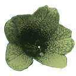

PLATE 073 · Köhler ref.

henbane
Fam. Solanaceae
- the mark
- A single bloom segmented out of a photograph, rendered in two greens so the veins and dark throat read.
- in one line
- A self-hosted gate that keeps AI scrapers off a site without taxing its readers.
- colour
- Green on green: light petals, dark veins. Cut out clean, no border; sits on any ground and reverses onto night.
drawn from the plant, not an icon set
The detail is the point: the bloom is segmented out of a real photograph (OpenCV GrabCut), not drawn, so the mark keeps the flower's own net-veining. Two greens separate petal from vein, and it's cut out clean against whatever it sits on.

